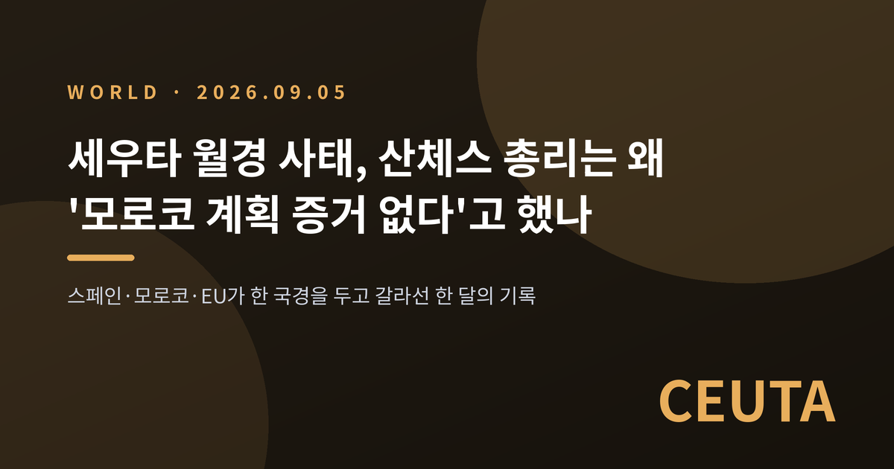
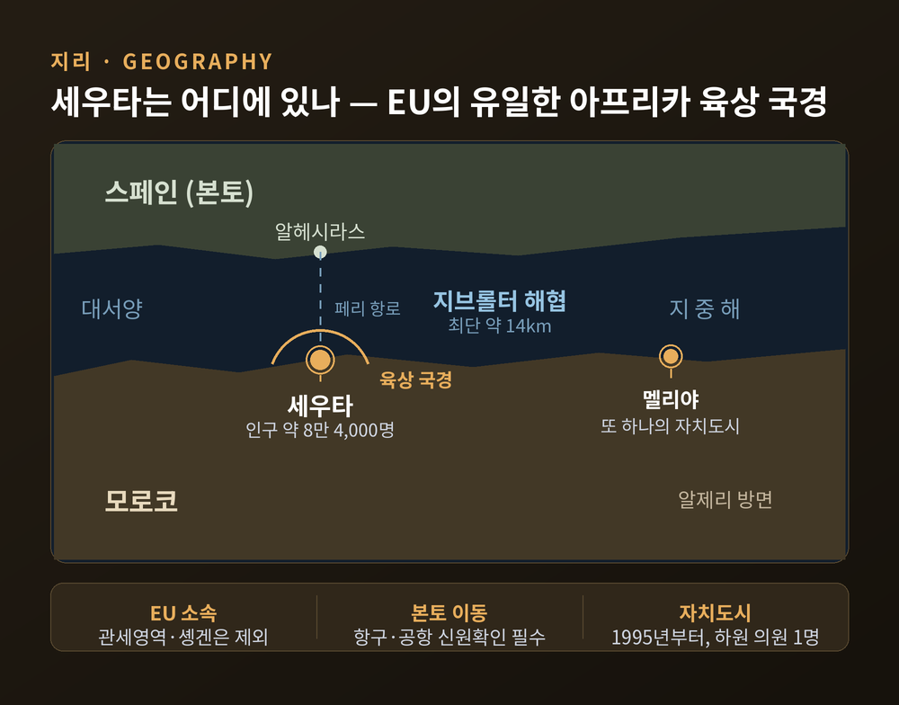
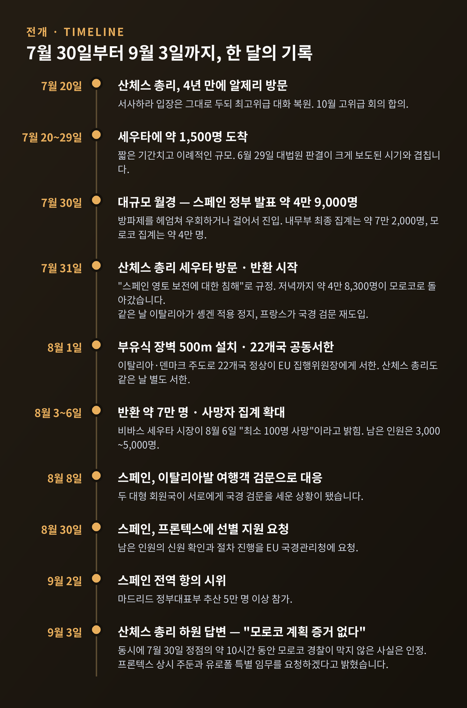
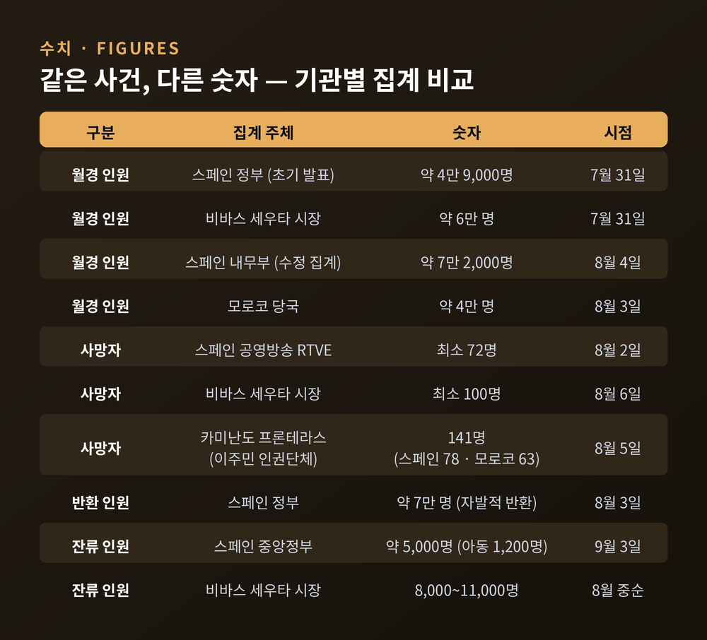
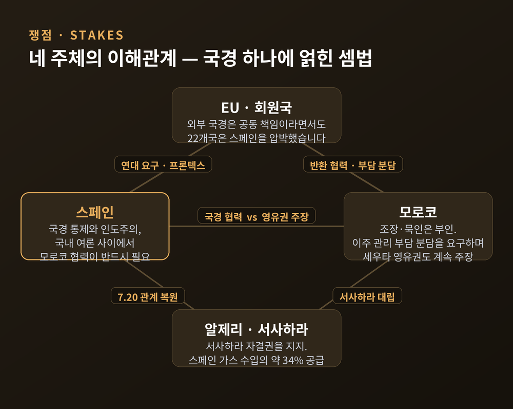
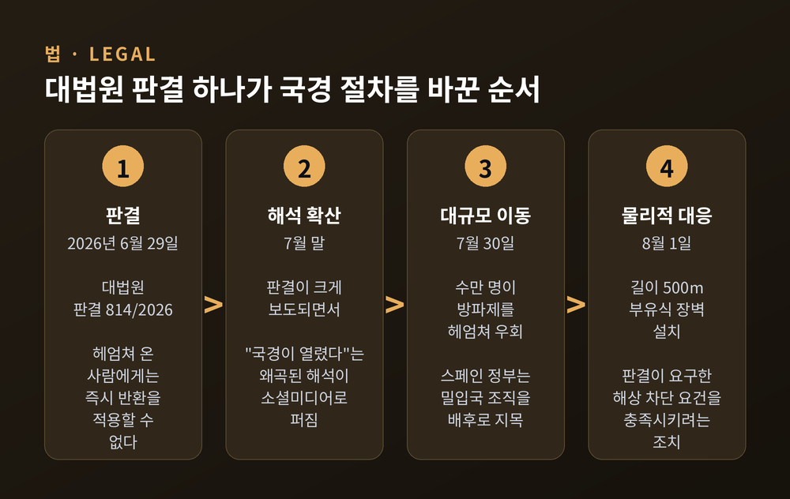
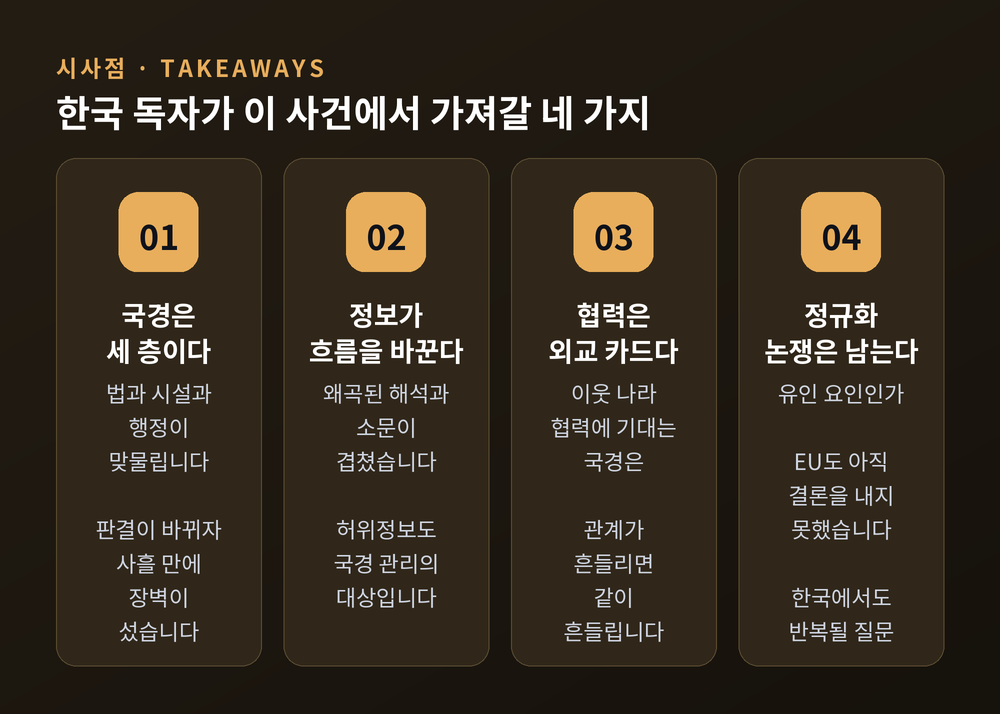

세우타 월경 사태, 산체스 총리는 왜 '모로코 계획 증거 없다'고 했나

이번 글에서는 2026년 7월 말 스페인령 세우타에서 벌어진 대규모 월경 사태와, 9월 3일 페드로 산체스 총리가 의회에서 내놓은 설명을 정리해 보겠습니다.
세 줄 요약
- 2026년 7월 30일, 모로코 쪽에서 스페인령 세우타로 수만 명이 하루 이틀 사이에 넘어왔습니다. 스페인 내무부는 약 7만 2,000명으로 집계했습니다.
- 9월 3일 산체스 총리는 하원에서 "모로코 정부가 이 사건을 계획했다는 확실한 증거는 없다"고 밝혔습니다. 대신 범죄 밀입국 조직을 배후로 지목했습니다.
- 이 사건은 스페인 국내 정치를 흔들었고, 이탈리아와 스페인이 서로 국경 검문을 도입하면서 EU 솅겐 체제까지 시험대에 올랐습니다.
무슨 일이 있었나
세우타는 아프리카 북단에 있는 스페인의 자치도시입니다. 지브롤터 해협 건너 스페인 본토와 마주 보고, 육지로는 모로코와 접합니다. 인구는 약 8만 4,000명입니다.
2026년 7월 20일부터 29일 사이, 이곳에 약 1,500명이 도착했습니다. 짧은 기간치고 이례적으로 많은 숫자였습니다.
그리고 7월 30일 아침, 규모가 완전히 달라졌습니다.
수천 명이 세우타 인근 해안과 월경 지점에 모였습니다. 상당수는 타라할과 벤수의 방파제를 헤엄쳐 우회했고, 일부는 모로코 측 검문소를 지나 걸어서 들어왔습니다. 스페인 정부는 그날 몇 시간 사이 약 4만 9,000명이 진입했다고 발표했습니다. 이후 내무부는 최종 집계를 약 7만 2,000명으로 수정했습니다. 반면 모로코 당국은 관련 인원을 약 4만 명으로 발표했습니다. 양측 숫자가 크게 다릅니다.
세우타의 수용시설은 곧바로 한계를 넘었습니다. 후안 헤수스 비바스 세우타 시장은 동반자 없는 미성년자 시설이 평시 정원의 약 2,400% 수준이라고 밝혔습니다. 시장은 중앙정부에 국가비상사태 선포를 요청했지만, 내무부는 이민 문제가 해당 법적 요건에 해당하지 않는다며 거부했습니다.
반환은 빠르게 진행됐습니다. 7월 31일 저녁 기준 약 4만 8,300명이 모로코로 돌아갔고, 8월 3일에는 약 7만 명이 돌아갔다고 스페인 정부가 발표했습니다. 정부는 이 반환이 자발적이었다고 설명했습니다.
인명 피해 규모는 기관마다 다릅니다. 스페인 공영방송 RTVE는 8월 2일 기준 최소 72명으로 보도했고, 비바스 시장은 8월 6일 최소 100명이라고 밝혔습니다. 이주민 인권단체 카미난도 프론테라스는 스페인 해역 78명, 모로코 해역 63명을 합쳐 141명으로 집계했습니다. 이 단체는 모로코 북부 병원 영안실을 추적해 숫자를 셉니다. 정부 공식 집계와 NGO 집계 사이에 상당한 간극이 있는 셈입니다. 사인은 익사, 그리고 국경 펜스가 놓인 방파제를 오르다 발생한 사고로 보고됐습니다.

산체스 총리가 9월 3일에 한 말
한 달이 지난 9월 3일, 산체스 총리가 하원에 섰습니다.
그 주에 스페인 고등법원 판사의 지시로 작성된 경찰 보고서가 공개된 참이었습니다. 보고서는 7만 명 이상의 진입이 자연발생적 이주가 아니라 국경 통제를 무력화하려는 계획된 시도였을 가능성을 제기했습니다. 모로코 보안군이 국경 인근에 평소보다 적게 배치됐고, 군중 해산을 진지하게 시도하지 않았다는 내용이었습니다.
산체스 총리의 답은 이랬습니다.
"어떤 기관도 — 외교부도, 유럽위원회도, 어떤 국제기구도 — 모로코가 이 사건을 계획하거나 실행했다는 확실한 증거를 스페인 정부에 제공하지 않았습니다."
— 페드로 산체스, 2026년 9월 3일 스페인 하원 (알자지라 보도)
다만 총리는 한 가지를 인정했습니다. 7월 30일 정점의 약 10시간 동안 모로코 경찰이 월경을 막지 않은 것은 사실이라는 점입니다. 그것이 의도적인 부작위였는지, 통제할 수 없었던 것인지는 스페인 당국도 아직 확정하지 못했다고 덧붙였습니다.
정부가 사태 초기부터 지목한 배후는 범죄 밀입국 조직이었습니다. 이들이 스페인 대법원 판결을 자기 편의대로 해석해 퍼뜨렸다는 설명입니다.
같은 날 총리는 EU 국경관리청 프론텍스의 상시 주둔을 요청하겠다고 밝혔습니다. 세우타 방면 불법 이주를 감시할 유로폴 특별 임무도 함께 요청하겠다고 했습니다. 이날 기준 세우타에 남은 인원은 중앙정부 집계로 약 5,000명, 그중 아동이 1,200명이었습니다.
하루 전인 9월 2일에는 스페인 전역에서 정부 대응에 항의하는 시위가 열렸습니다. 마드리드 정부대표부 추산으로 5만 명 이상이 모였습니다.

왜 이 사건이 중요한가
첫째, 법원 판결 하나가 국경 정책을 통째로 흔들었습니다.
2026년 6월 29일 스페인 대법원은 판결 814/2026에서, 헤엄쳐 세우타나 멜리야로 들어오려는 사람에게는 이른바 '즉시 반환'을 적용할 수 없다고 판시했습니다. 대신 통역과 변호인 조력이 보장되고 사유가 기재된 정식 절차를 밟아야 한다고 했습니다.
다만 대법원은 여지를 남겼습니다. 해상에도 물리적 차단 시설이 있다면 즉시 반환이 가능할 수 있다는 것입니다. 스페인이 8월 1일 세우타 앞바다에 길이 500m 부유식 장벽을 깐 이유가 여기 있습니다.
이 판결이 7월 말 크게 보도되면서, 모로코 소셜미디어에는 "국경이 사실상 열렸다"는 왜곡된 해석이 퍼졌습니다. 판결문의 취지와 소문 사이의 거리가 수만 명을 움직인 셈입니다.
둘째, EU가 하루 만에 갈라졌습니다.
7월 31일 이탈리아는 스페인과의 솅겐 협정 적용을 정지한다고 발표했습니다. 프랑스는 스페인과의 국경 검문을 재도입했습니다. 8월 1일에는 이탈리아와 덴마크가 주도해 22개국 정상이 EU 집행위원장 앞으로 공동서한을 보냈습니다. 스페인, 프랑스, 포르투갈, 아일랜드, 룩셈부르크는 서명하지 않았습니다.
스페인도 8월 8일 이탈리아발 여행객에 대한 검문으로 맞섰습니다. 두 대형 회원국이 서로에게 국경 검문을 세운 것입니다. 9월 들어 이탈리아는 조치를 9월 15일까지 연장했고, 스페인도 9월 22일까지 유지하기로 했습니다.
여기서 짚어둘 사실이 있습니다. 세우타와 멜리야는 EU에 속하지만 솅겐 지역에는 속하지 않습니다. 1991년 스페인이 솅겐에 가입할 때 두 도시는 제외됐습니다. 세우타에서 본토로 가려면 항구나 공항에서 국가경찰의 신원확인을 반드시 거쳐야 합니다. EU 이민 담당 집행위원 마그누스 브루너도 이 점을 확인했고, 7월 31일 "단 한 명도 EU 본토로 넘어가지 않았다"고 밝혔습니다.
그럼에도 정치적 반응은 법적 사실보다 빨랐습니다. 여기가 이번 사건의 가장 흥미로운 지점일지도 모릅니다.

배경 — 스페인과 모로코의 오래된 계산
세우타는 1415년 포르투갈이 점령했고, 1640년 포르투갈이 독립을 되찾을 때 스페인 잔류를 택했습니다. 멜리야는 1497년 스페인이 점령했습니다. 1956년 모로코가 프랑스에서 독립할 때도 두 도시는 스페인령으로 남았습니다. 모로코는 지금도 두 도시의 영유권을 주장합니다.
두 나라의 관계는 몇 차례 크게 출렁였습니다.
2021년 5월에도 비슷한 일이 있었습니다. 약 8,000명이 이틀 만에 세우타로 들어왔습니다. 스페인이 서사하라 독립운동 단체 폴리사리오 전선의 지도자를 모로코에 알리지 않고 코로나19 치료차 입원시킨 직후였습니다.
2022년 3월에는 스페인이 수십 년간 지켜온 중립을 뒤집고 서사하라에 대한 모로코의 자치안을 지지했습니다. 모로코와는 화해했지만, 서사하라 자결권을 지지하는 알제리가 스페인과의 우호조약을 정지했습니다.
그리고 2026년 7월 20일, 산체스 총리가 4년 만에 알제리를 방문했습니다. 서사하라 입장 자체는 바뀌지 않았지만 최고위급 대화가 복원됐고, 10월 스페인에서 8년 만의 고위급 회의를 열기로 합의했습니다. 알제리는 2026년 상반기 스페인 가스 수입의 약 34%를 공급합니다.
세우타 사태는 그로부터 열흘 뒤에 벌어졌습니다.
여러 분석가가 이 순서를 지적했습니다. 다만 인과관계가 입증된 것은 아닙니다. 스페인 당국은 알제리와의 관계 개선이 모로코와의 관계를 해쳤다는 해석을 부인합니다.
모로코 정부의 설명은 다릅니다. 모로코 내무부는 이번 사태의 원인을 소셜미디어의 허위정보, 인신매매 조직, 스페인 대법원 판결에 대한 오해로 돌렸습니다. 조장이나 묵인은 없었다는 입장입니다. 오히려 모로코 국가인권위원회는 8월 8일 예비 보고서에서 스페인 보안군 일부의 이주민 폭행 의혹을 제기했습니다.
반대편 목소리도 분명합니다. 비바스 세우타 시장은 "6만 명이 모로코 정부의 승인 없이 들어오는 것은 불가능하다"고 말했습니다. 스페인 당국자들은 사건 며칠 전부터 평소 있던 모로코 국경 순찰이 보이지 않았다고 전했습니다.
양쪽 주장이 정면으로 부딪히고, 아직 어느 쪽도 확정되지 않았습니다.

잊기 쉬운 숫자들
이 사건을 국경 관리 이슈로만 읽으면 놓치는 것이 있습니다.
모로코 쪽 자료를 보면 2024년 조사에서 모로코인의 35%가 이민을 원한다고 답했습니다. 이유는 경제가 45%, 교육 기회가 18%, 부패가 15%였습니다. 2025년 청년 실업률은 약 40%였습니다. 불평등과 빈곤은 2019년에서 2022년 사이 오히려 늘었습니다. 2025년 가을에는 공공서비스와 부패에 항의하는 대규모 청년 시위가 있었습니다. 청년의 44%는 가뭄을 심각한 문제로 꼽았습니다.
소문 하나로 수만 명이 움직였다는 설명만으로는 부족합니다. 움직일 준비가 되어 있던 사람들이 이미 그만큼 많았다고 보는 편이 정확합니다.
인도주의 상황도 남았습니다. 8월 3일 기준 세우타에는 동반자 없는 미성년자가 862명 있었고, 아동 전용 숙소는 29개뿐이었습니다. 스페인 아동·청소년부가 긴급 2,500만 유로를 배정했습니다. 유니세프는 이들의 신원 확인과 성인과 분리된 시설 수용, 인신매매로부터의 보호를 요구했고, 세이브더칠드런은 본토 전역으로의 분산 이송을 촉구했습니다.
한계도 인정해야 합니다. 국제법상 개인별 심사 없는 집단 추방은 금지되어 있지만, 스페인 정부는 본토 이송에 소극적이었습니다. 우파 야당과 다른 유럽 국가들의 반발을 우려했기 때문이라는 분석이 나옵니다. 법과 정치가 어긋나는 지점입니다.

한국 독자에게 이 사건이 남기는 것
멀리 떨어진 지중해의 일로만 보기에는 겹치는 대목이 많습니다.
우선 국경 관리가 법·시설·행정의 세 층으로 얽혀 있다는 점입니다. 대법원이 "헤엄쳐 온 사람에겐 즉시 반환을 못 쓴다"고 하자, 물리적 차단 시설의 유무가 곧바로 정책 변수가 됐습니다. 스페인은 사흘 만에 부유식 장벽을 깔았습니다. 법이 바뀌면 현장이 바뀌고, 현장이 바뀌면 다시 법을 손대야 합니다.
다음으로 정보 환경이 이주 흐름을 바꾼다는 점입니다. 판결의 왜곡된 해석과 "국경이 열렸다"는 소문이 결합했습니다. 참고로 미국·이스라엘이 이번 사태를 부추겼다는 주장은 AP 팩트체크에서 근거가 없다고 확인됐습니다. 재난이나 이주 상황에서 허위정보 대응은 이제 국경 관리의 일부입니다.
세 번째는 이웃 국가와의 국경 협력이 곧 외교 카드가 된다는 점입니다. 스페인은 모로코의 협력 없이 국경을 관리할 수 없고, 모로코도 그 사실을 압니다. 한 나라의 국경 관리가 상대국 협력에 구조적으로 의존할 때 어떤 일이 생기는지를 이번 사건이 보여줍니다.
마지막은 정규화 논쟁입니다. 스페인 정부는 2026년 초 불법 체류자 대규모 정규화 프로그램을 내놨고, 100만 명 이상이 신청했습니다. 22개국 공동서한은 이 제도를 유인 요인으로 지목했습니다. 스페인 정부는 세우타 진입자 중 누구도 혜택 대상이 아니라고 반박했습니다. 신청 마감이 이미 지났고 거주 요건도 맞지 않기 때문입니다. 브루너 집행위원조차 "좋은 신호는 아니다"라고 하면서도 "직접적 연관은 현재 확인되지 않는다"고 덧붙였습니다.
이 논쟁은 한국에서도 형태를 바꿔 반복될 질문입니다. 인구 감소로 외국인 인력 유입이 늘고 있고, 체류 자격 정규화와 미등록 체류 문제도 주기적으로 올라옵니다. "정규화는 유인 요인인가"라는 물음에 유럽도 아직 답을 찾지 못했습니다.

앞으로의 전망
세 가지를 지켜볼 만합니다.
국경 시설과 절차의 상시화. 산체스 총리가 요청한 프론텍스 상시 주둔과 유로폴 특별 임무가 실제로 성사될지가 첫 번째 관문입니다. 성사된다면 세우타는 EU 차원에서 관리되는 국경이 됩니다.
솅겐 검문의 지속 여부. 이탈리아와 스페인의 상호 검문은 9월 중순 이후 다시 판단해야 합니다. 솅겐 국경규정상 임시 검문은 예외적 상황에 한정되고 총 2년을 넘길 수 없습니다. 한 번 세운 검문대는 걷기 어렵다는 것이 지난 몇 년 유럽의 경험이었습니다.
스페인-모로코 관계의 재조정. 8월 이후 모로코 각료들의 세우타·멜리야 영유권 발언이 잇따랐습니다. 여기에 10월 스페인-알제리 고위급 회의가 예정돼 있습니다. 스페인은 모로코와의 화해를 유지하면서 알제리와의 협력도 복원해야 하는 위치에 있습니다. 쉽지 않은 균형입니다.
한 가지 더. 이 사건의 사실관계는 아직 진행형입니다. 모로코 정부의 조직적 관여 여부, 7월 30일 그 10시간 동안 무슨 판단이 있었는지는 스페인 당국조차 결론을 내리지 못했습니다. 예전 국제 뉴스는 확정된 사실을 늦게 전했습니다. 지금은 확정되지 않은 사실이 실시간으로 전해집니다. 읽는 쪽의 태도도 그만큼 달라져야 합니다.
정리하면 이렇습니다.
산체스 총리의 9월 3일 발언은 모로코를 두둔한 것도, 사건을 축소한 것도 아니었습니다. "증거가 없다"는 말과 "일어나지 않았다"는 말은 다릅니다. 총리는 앞의 말을 했고, 뒤의 말은 하지 않았습니다.
국경에서 벌어진 일의 무게는 숫자로만 남지 않습니다. 스페인 당국 확인 기준으로도 최소 72명에서 100명, 인권단체 집계로는 141명이 목숨을 잃었습니다. 어느 숫자를 택하든 가볍지 않습니다.
이 사건을 한 문장으로 줄인다면 이렇게 적겠습니다 — 국경은 선이 아니라 관계이며, 관계가 흔들리면 선도 흔들립니다.
세우타의 다음 소식을 계속 지켜볼 필요가 있겠냐고 물으신다면, 그렇다고 답하겠습니다.